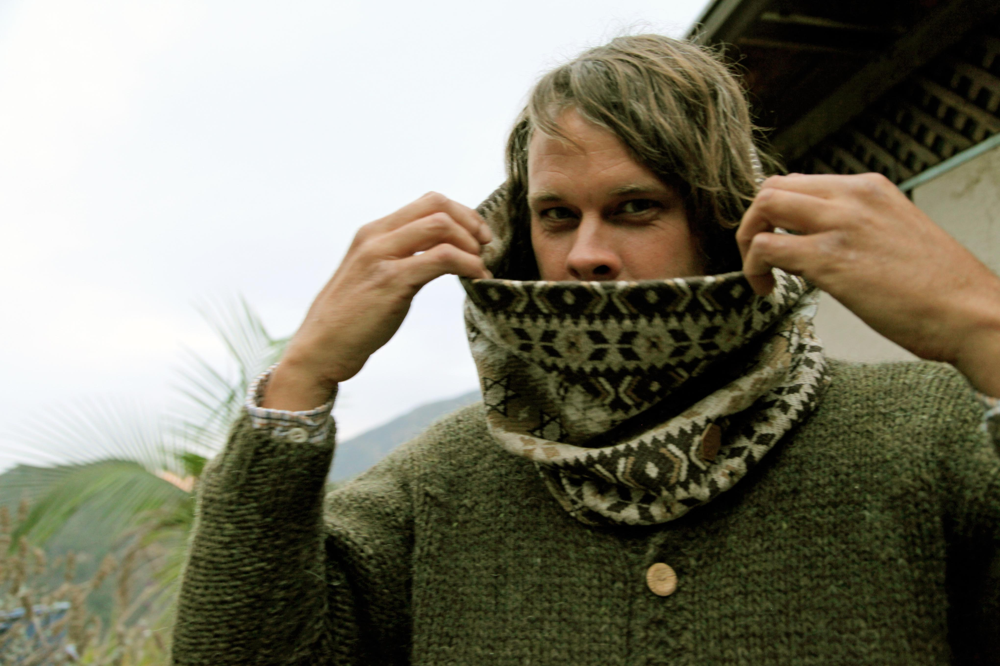

Little Wings - Last

Pre-order CD $15 Pre-order CS $15
- Little Wings' sprawling double album, Last, reissued on CD and cassette.
- Artwork by Kyle Field.
- Layout by Jasper Baydala.
- Originally released by Rad in 2013.
Track Listing
- I Waited on the Door (3:40)
- There Goes My Light Feeling (2:49)
- Wide Daylight (3:09)
- Where Is the Worm? (2:34)
- Homelesship (3:53)
- Bonus Fog (5:24)
- You Know Who? (4:39)
- A Chair a Key a Song (4:23)
- Country Skull (3:24)
- Neptune's Next (6:37)
- Doom Room (4:19)
- Knock on Every Door (3:39)
- Sunburned Eyes (4:10)
- Somebody Loves Me (3:55)
- Sandy Babe (4:58)
- Wild Stairs How Deep Is the Sea? (3:57)
- CVD (3:50)
Release Date March 25, 2022
Catalog Number PV-24
Format CD / CS
California-based singer/songwriter Kyle Field has been releasing music under the Little Wings moniker for over two decades. Field's 2013 album, Last, is one of his most accomplished works, serving as a bridge between the artist's early K Records material and recent hi-fi albums for labels such as Woodsist and People in a Position to Know.
Recorded at Sacramento’s Hangar Studios by John Baccigaluppi, Last is a sprawling double album that captures the very essence of Field’s starkly personal folk musings. Hazy opener “I Waited on the Door” sets the tone for the rest of the release with its delicate instrumentation and wistful backup vocals (courtesy of Sea of Bees’ Julie Ann Bee); meanwhile, the album’s six-minute highlight, “Neptune’s Next,” stands as one of the most transcendent moments in Little Wings’ discography.
Much like most of Field’s work, 'Last' is utterly beautiful in its simplicity. Athens, Georgia label Primordial Void is proud to reissue this 17-track collection nearly 10 years after its original release. Available on CD and cassette.
